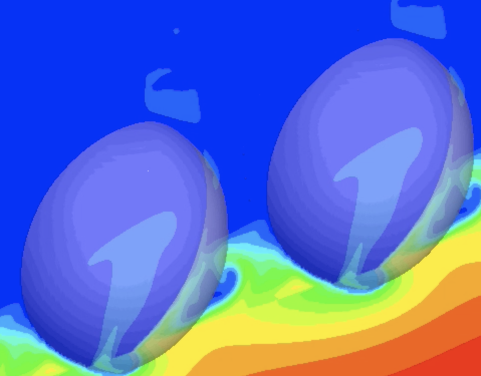

		<div class="about">
			<h1>About</h1>
			<p>Front Tracking Code (FTC) is a CFD code designed to simulate multiphase flows.</p>
			
			<ul class="contacts">
				<li><a href="#">@TwitterHandle</a></li>
				<li><a href="#">Your Departmental Webpage</a></li>
				<li><a href="#">Another site you want to link to</a></li>
				</ul>
		</div>